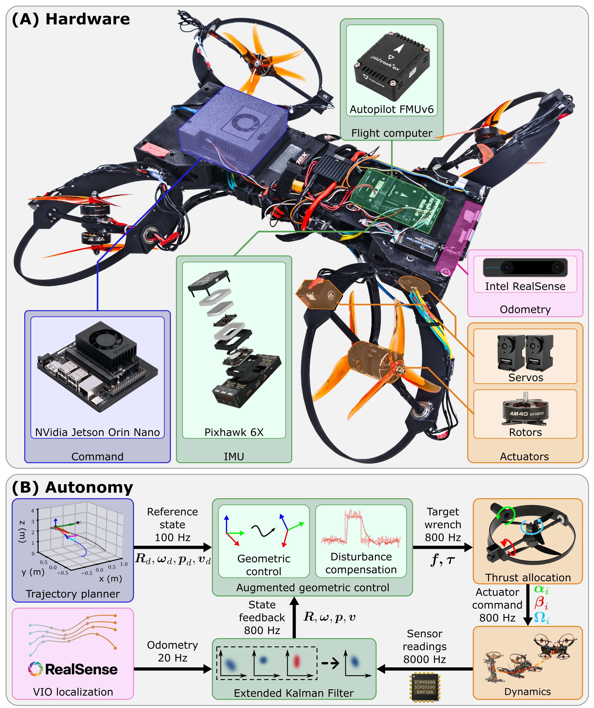

Reaching remote locations, traversing tight spaces, and inspecting complex infrastructure, such as around and in-between pipes and ducts from any direction.
Turning valves, pushing obstacles away, and pressing sensors against infrastructure to assess structural integrity.
Moving and applying forces with accuracy despite challenging disturbances, such as wind, wall, ceiling, and ground effects, and counter-acting contact forces, e.g., friction.
Key to our approach is a co-design of hardware and control. On the hardware side, each of the four rotor systems is independently articulated via two-axis gimbals, enabling omnidirectional thrust vectoring across the full 6-DoF workspace. On the control side, we introduce an energy-optimal thrust allocation that achieves maximum thrust vectoring in any direction, paired with a generalized geometric controller that is almost-globally stable and augmented with disturbance adaptation for robustness to wind, wake, and contact forces. The thrust allocation permits inter-rotor cancellation only when needed to avoid downwash interference and mechanical gimbal lock, eliminating the wasteful cancellations of prior omnidirectional designs.

@inproceedings{iral2025morpheus,
title = {MorphEUS: Morphable OmnidirEctional Unmanned System},
author = {Ivan Bao and Jos{\'e} C. D{\'\i}az Pe{\'o}n Gonz{\'a}lez Pacheco and Atharva Navsalkar and Andrew Scheffer and Sashreek Shankar and Andrew Zhao and Hongyu Zhou and Vasileios Tzoumas},
booktitle = {Proceedings of the IEEE International Conference on Robotics and Automation (ICRA), OCRAIM Workshop},
year = {2025},
url = {https://iral-morphable.github.io/}
}